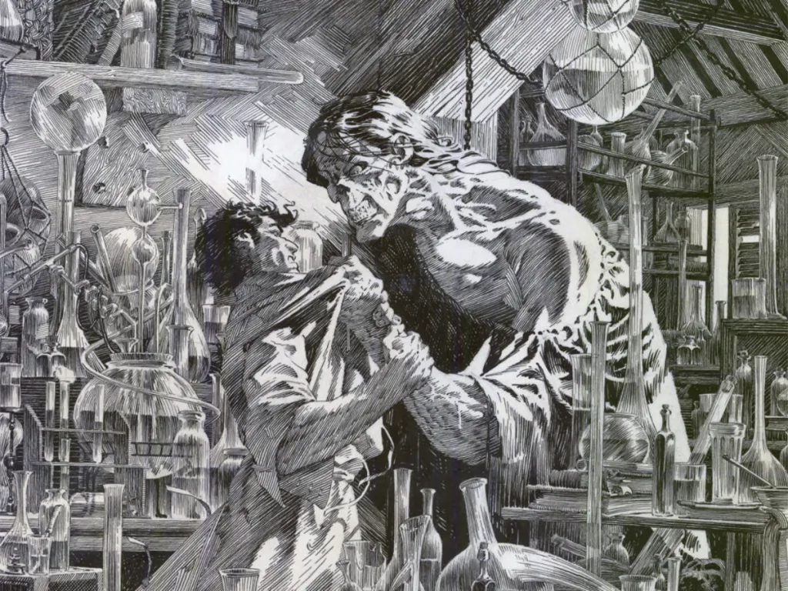

I don't think I ever planned to read this. Mostly cause gothic horror novels aren't necessarily my thing. However, that all changed after I watched Kenneth Branagh's Mary Shelley's Frankenstein (1994).
I was horrified at the movie at how bad it was, so I picked up the book for multiple reasons. The first was to see why people considered that movie to be the most accurate. The second was out of curiosity. And third, I wanted to read something in the horror/gothic genre for the Halloween season.
After reading the novel, the introduction, and how and why Mary Shelley wrote it, I greatly enjoyed it. There's something quite fascinating about reading classic stories in classical/formal English. A type of English people often spoke, wrote, and read in those days, as opposed to the modern, urban, slang English used today.
The story is gothic and eerie. I see this as a personal tragedy. It's not an easy read if this stuff scares you. It's written in a first-person perspective. It's as if Mary Shelley wanted the audience to become Victor Frankenstein, which I appreciated.
And speaking of Victor, I have a lot to say about him. Victor is not a good person. He's a coward, sadistic, selfish, and stubborn man whose arrogance dominated his intelligence, wisdom, and passion. After Victor loses his mother to scarlet fever at the age of seventeen, he thinks he can control life. (A modern example would be the character of Darth Plagueis, in James Luceno's Darth Plagueis. Check it out.)
This mindset is where Victor's character changes. After creating his monster, Victor becomes horrified by what he's done. You see, Victor is a stubborn and picky perfectionist. The creature is not up to standards, so he neglects and abandons it, which results in things going horribly wrong for Victor. The creature wants revenge.
Notice how Victor does nothing to stop his creation? Was he afraid of the monster? Was he secretly the villain? It's hard to tell, but I can assume it's cause he's a coward. I mean, Victor basically destroyed his life because of his stubbornness. I think Victor had intelligence, creativity, and passion, but he put them to the wrong use.
I believe it's a shame, but I think Mary Shelley portrayed Victor this way to convey a moral. Stubbornness, perfectionism, fear, and pickiness can be a dangerous combination. You can also see examples of that in other stories and in real life. We see it in Victor's character.
Is he a good character? No. But he's certainly a tragic figure.